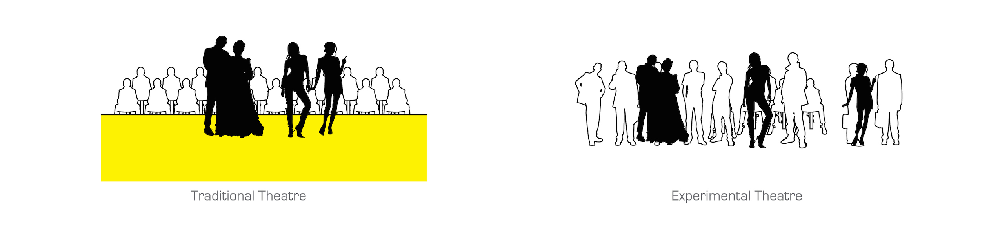

above, night rendering from the railroad

above, day rendering from the main street
Research & Analysis
"How do I define Experimental Theatre in this project?"
In a traditional theatre, there is always a clear separation between performers and audiences. The raised stage, the curtains, the backstage and the arranged seatings reinforce the idea of "separation". However, with the emphasis of the concept "human interaction", there is a trend to break down the clearly defined boundaries and to challenge the stereotypes of performers and audiences.
above, experimental theatre research

above, comparison between traditional and experimental theatres
"How do people approach the site?"
The site of this project is on the periphery of Buenos Aires, Argentina. It is currently a deserted area but with great potential for future development. Street art with its bold use of color summarizes the primary feature of the site. A design for an experimental threatre is proposed to bring in people and activate the site to allow interactions between the site and its surroundings.
above, site circulation analysis
Railway lines running on the south connect the site to the center of Buenos Aires, and at the same time become one of the primary approaches to bring in visitors to the site. Driving is another way to approach and the site accommodates enough parking areas. On the north of the site, the original cultural center established the fame for this area for a long time and helped the site gather potential targets. There are also interesting shops, vendors, galleries and street arts offer supporting activities for visitors.
Prototype Exploration
above, prototype deformation set and strategy
Experimental theatre entails interaction. A strategy of either carving, slicing or penetrating the original prototype breaks the rigid boundary and encourages interaction between people and objects.
above, design concept
The idea of this project is originated from the plan of La Plata, the capital city of province Buenos Aires, where on the plan, distinct modules are joined to make a unified block.
above, module diagram
The modules are finalized to two inverted pieces in this project and are unified into one. While each module keeps its own bold reading from outside, there is a “chemical reaction” inside to provide a continuous experience for the visitors.
Project Design
above, ground level plan
The Theatre is elevated on a platform and stands out boldly from the context. Parking is right underneath the platform and easily accessed from the main road. Two ramps, which can be used as outdoor gathering spaces, connect the platform and lead visitors to a journey inside the theatre.
above, north section

above, west section
The featured interactive theatre occupies the center of the building and opens to the outside. Unlike traditional theatres, there is no specified stages or seats, but podiums and steps, which also blurs the boundary between “viewers” and “actors”. The open theatre is surrounded by galleries on ramps guiding visitors up. Cafes, restaurants and other supporting programs are scattered to the corners of the building and directedly connected to outside plinth.
above, exploded axon diagram
The structural system for this project is comprised of concrete folded plates with hidden reinforcement and truss columns, which gives the building a clean profile and allows long span.
The facade is consisted of two layers: an inner layer of glazing for insulation, and a layer of metal mesh that not only provides shading during the day but also allows artificial lighting coming through and lit the building at night.
Year: ARCH 302, 2014 Spring
Location: Buenos Aires, Argentina
Program: Theatre, Gallery